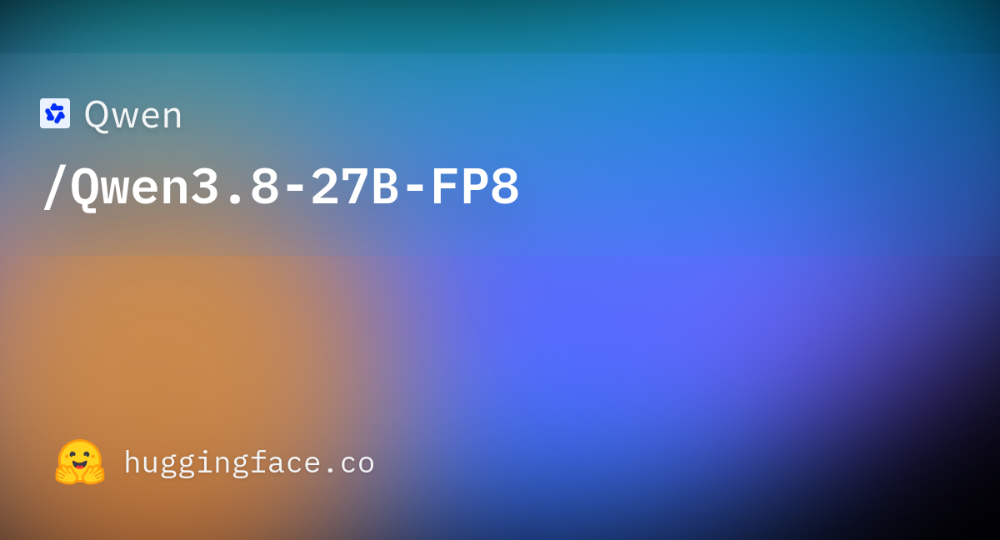

04 Hugging Face · qwen 게시일 2026.08.14
Qwen 3.8 27B, 이전 27B보다 코딩 점수 올랐다

Qwen 3.8 27B가 Hugging Face에 올라왔다. 공개된 자료는 주로 벤치마크 표로 구성됐다. 표만 봐도 이전 세대 27B 모델보다 코딩, 에이전트, 멀티모달 항목에서 개선 폭이 크다. 다만 이 발췌에는 라이선스와 하드웨어 조건은 보이지 않는다.
핵심 브리핑
Qwen 3.8 27B는 FP8 형식의 27B급 모델로 공개됐다. 자료에는 코딩, 에이전트, 일반 추론, 멀티모달 평가 결과가 담겼다. 많은 항목에서 Qwen3.6-27B와 Qwen3.7-Plus를 앞섰다.
- Terminal Bench 2.1: 73.0
- SWE-bench Pro: 61.7
- NL2Repo-Bench: 42.3
- DeepSWE 1.1: 42.2
- QwenSWEBench: 79.0
- CoWorkBench: 70.7
- JobBench: 33.4
- HLE: 30.8
- LiveCodeBench v6: 90.3
멀티모달 평가도 함께 제시됐다. OSWorld-Verified는 84.3, WebArena-Verified는 64.8, AndroidWorld는 81.9였다. 문서 이해 항목 OmniDocBench 1.5는 91.1로 적혔다.
비교표에서는 일부 항목에서 Opus4.6 Max가 더 높았다. 예를 들어 Terminal Bench 2.1은 Opus4.6 Max가 78.2였다. GPQA Diamond와 HLE에서도 Opus4.6 Max가 더 높게 적혔다.
맥락 읽기
이 발췌에는 모델 크기와 평가표는 있지만, 도입에 필요한 핵심 조건이 빠져 있다. 라이선스, 배포 방식, 권장 하드웨어, 상업 이용 조건을 확인할 수 없다. 그래서 실제 도입 조건보다 성능 방향을 읽는 데 초점을 맞춰야 한다.
표만 보면 Qwen 3.8 27B는 특히 코딩과 에이전트 업무에 힘을 실었다. 이전 Qwen 27B 계열 대비 점프 폭이 큰 항목이 여럿 있다. 컴퓨터 유즈와 문서 이해 평가도 포함돼 있어, 텍스트 대화보다 실제 업무 조작 쪽을 겨냥한 모델로 읽힌다.
오픈웨이트 진영에서는 27B급 모델이 어느 정도까지 상용 대형 모델에 근접하느냐가 늘 관심사다. 이 자료는 그 경쟁 축이 코딩에서 멀티모달 업무 자동화로 넓어졌음을 보여준다.
| 평가 | Qwen3.8-27B | Qwen3.6-27B | Qwen3.7-Plus | Opus4.6 Max |
|---|---|---|---|---|
| Terminal Bench 2.1 | 73.0 | 63.4 | 64.0 | 78.2 |
| SWE-bench Pro | 61.7 | 53.5 | 57.6 | 53.4 |
| DeepSWE 1.1 | 42.2 | 13.3 | 14.2 | -- |
| CoWorkBench | 70.7 | 61.0 | 65.1 | 68.2 |
| OSWorld-Verified | 84.3 | 63.9 | 73.3 | 72.7 |
| OmniDocBench 1.5 | 91.1 | 89.4 | 91.4 | 86.6 |
업계의 움직임
HN Trending, The New Stack, Reddit r/LocalLLaMA, Simon Willison Blog 등 여러 채널이 이 모델을 함께 다뤘다. 커뮤니티에서는 성능 못지않게 기본 동작이 과하게 길게 생각하는 쪽으로 잡혀 있다는 반응도 나왔다. 아직 원문 발췌에는 공식 도입 사례나 고객 반응이 실려 있지 않다.
시사점과 체크포인트
우리 회사가 오픈웨이트 모델을 검토한다면, Qwen 3.8 27B는 코딩 보조와 문서·화면 이해 업무의 후보가 될 수 있다. 특히 사내 배포나 데이터 통제를 중시하는 팀은 관심을 가질 만하다.
다만 지금 정보만으로는 바로 판단하기 어렵다.
- 확인 필요: 라이선스, 상업 이용 조건, 온프레미스(사내 서버에 직접 설치해 쓰는 방식) 가능 여부
- 인프라 질문: FP8 지원 하드웨어가 무엇인지, 메모리 요구량이 어느 수준인지
- 업무 적합성: 금융 문서 이해, 한국어 성능, 화면 조작 정확도, 내부 시스템 연동 난이도
- 리스크: 벤치마크는 강하지만 실제 운영에서 응답 길이와 지연 시간이 과도해질 수 있는지 점검 필요
PoC에서는 코딩 과제만 보지 말고 문서 검토, 화면 기반 업무, 검색 결합 업무를 함께 돌려야 한다. 오픈웨이트 모델은 성능보다 운영 책임 범위가 더 넓다는 점도 감안해야 한다.
주요 용어
원문 정보
제목: Qwen 3.8 27B
게시일: 2026.08.14
출처 URL: https://huggingface.co/Qwen/Qwen3.8-27B-FP8